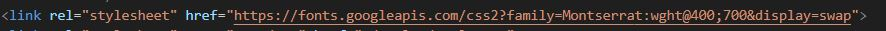
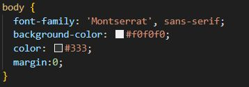
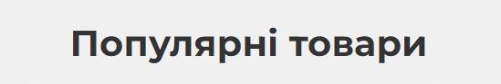
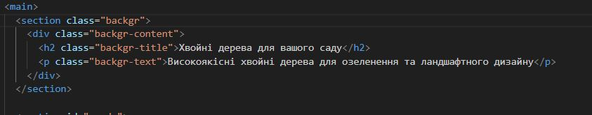
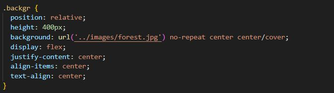
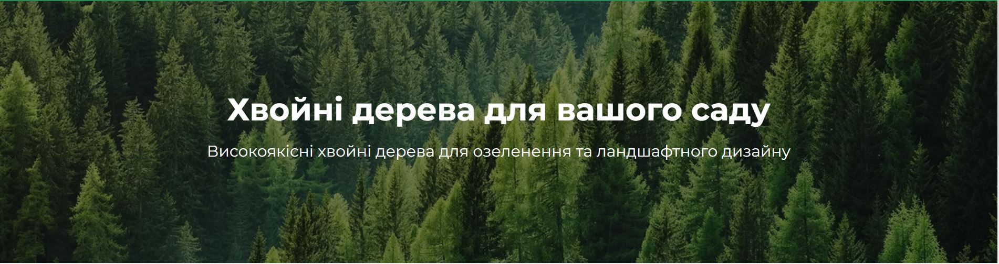

Звіти з лабораторних робіт
з дисципліни "WEB-орієнтовані технології."
Основи Frontend та Backend розробок
Студента групи ІО-15 Жердєва Данила

Звіти з лабораторних робіт
з дисципліни "WEB-орієнтовані технології."
Основи Frontend та Backend розробок
Студента групи ІО-15 Жердєва Данила
Підключення шрифта
Використання в проекті за допомогою стилізацію
Результат:
Код:
 Результат:
